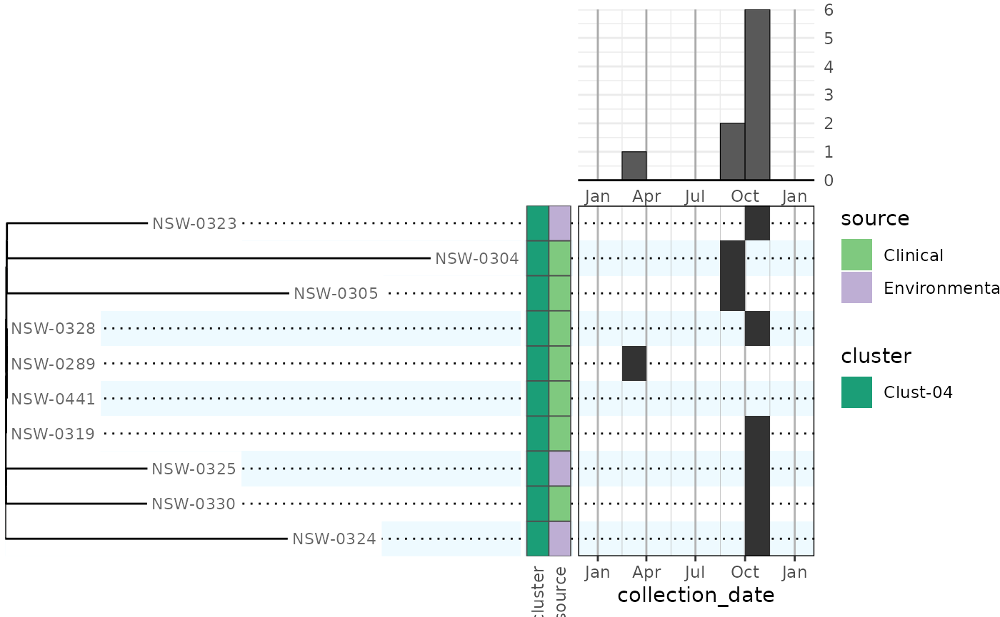
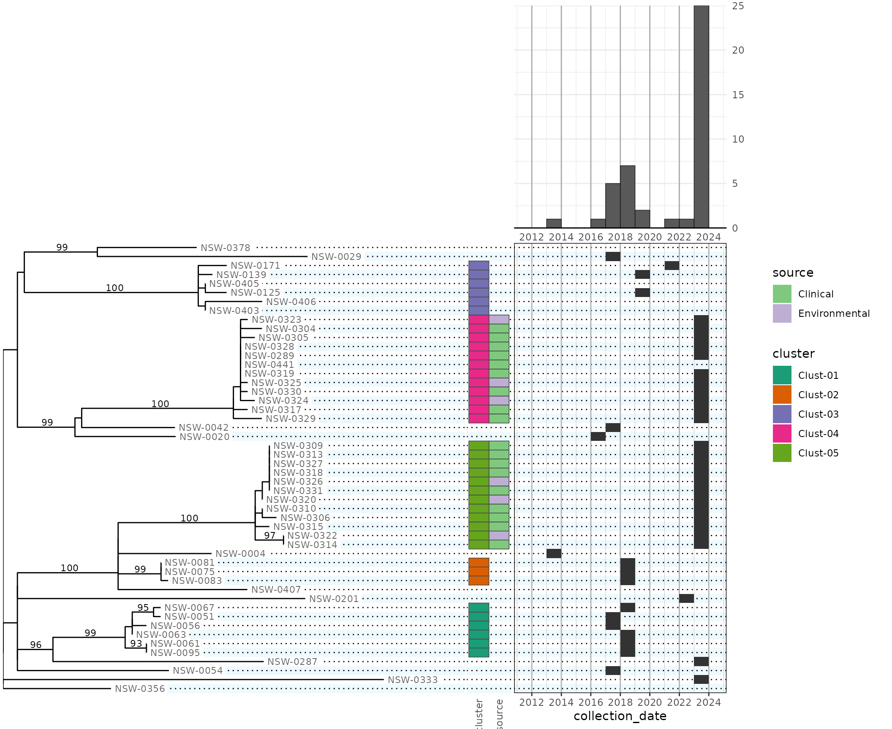
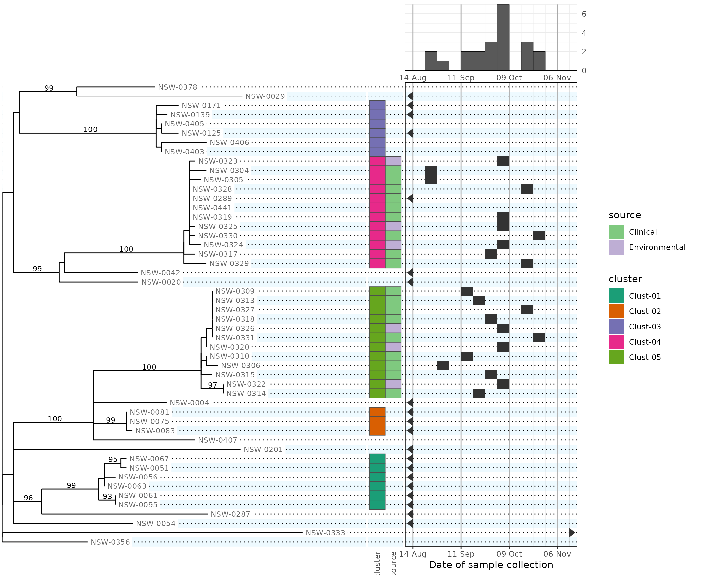
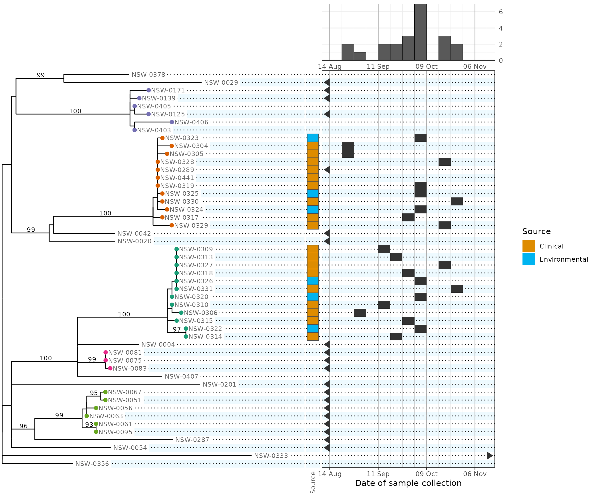

phylepic charts: combining phylogenetic trees with epidemic curves
Source:vignettes/phylepic.Rmd
phylepic.RmdThis document steps through creating and customising phylepic charts using an example dataset.
Preparing the data
This example uses a real tree from a foodborne enteric pathogen. The
tree is loaded in from a Newick file using the ape
package:
tree <- read.tree(system.file("enteric.newick", package = "phylepic"))
plot(tree)The tree comes with some metadata that has been manipulated for illustration. The metadata includes a name and collection date for the samples, whether they are environmental or clinical isolates (if known), and a label for any isolates that were assigned to a genomic cluster. These are read in from a CSV file:
metadata <- read.csv(system.file("enteric_metadata.csv", package = "phylepic"))
head(metadata)
#> name collection_date source cluster
#> 1 NSW-0004 2013-02-18 <NA> <NA>
#> 2 NSW-0020 2016-11-19 <NA> <NA>
#> 3 NSW-0029 2017-01-13 <NA> <NA>
#> 4 NSW-0042 2017-02-28 <NA> <NA>
#> 5 NSW-0051 2017-11-20 <NA> Clust-01
#> 6 NSW-0054 2017-12-23 <NA> <NA>The only requirements here are that we have a column that corresponds
to the tip labels from the tree (here called name), and one
that has dates represented as Date objects. We’ll also
indicate the two columns with categorical data by converting them to
factors:
Basic plotting
To start with, we can pull out one clade from the tree to make a small plot:
clade.parent <- ape::getMRCA(tree, c("NSW-0324", "NSW-0330"))
clade <- ape::extract.clade(tree, clade.parent)
plot(clade)The phylepic() function joins a tree with its metadata
and does some consistency checks. The resulting phylepic
object has a plot method that guesses sensible defaults:
phylepic(clade, metadata, name, collection_date) |> plot()
#> Warning: Removed 1 row containing non-finite outside the scale range (`stat_week()`).
#> Removed 1 row containing non-finite outside the scale range (`stat_week()`).
Metadata bars were added for all factor columns in the metadata frame, with different categorical colour scales. The dates were binned by week to give an epidemic curve in the upper right. The calendar panel in the lower right has the same weekly binning so that you can scan across from a tip on the tree and follow it up to the epidemic curve to find the collection date.
Customising the plot
Looking to the full dataset instead of just that single clade, the default plot needs some configuration to be useful:
phydata <- phylepic(tree, metadata, name, collection_date)
plot(phydata)
#> Warning: Removed 7 rows containing non-finite outside the scale range (`stat_week()`).
#> Removed 7 rows containing non-finite outside the scale range (`stat_week()`).
The date scale
We can choose the first day of the week to match the local conventions:
options(phylepic.week_start = "Monday")The date range is too big for this type of chart, so we want to focus
in on a time period near the outbreak clusters Clust-04 and Clust-05. By
using scale_x_week, we get some conveniences such as being
able to specify the breaks (tick labels) in intervals of weeks:
date_scale <- scale_x_week(
name = "Date of sample collection",
limits = as.Date(c("2023-08-14", "2023-11-15")),
date_labels = "%d %b",
week_breaks = 4L,
week_minor_breaks = 2L
)We can also control the relative heights of the two rows of panels in
the final grid using height.tree (choosing here to make is
6 times the height of the epidemic curve). Our date scale is passed to
both the relevant panels:
plot(phydata, scale.date = date_scale, height.tree = 6)
#> Warning: Removed 28 rows containing non-finite outside the scale range (`stat_week()`).
#> Removed 28 rows containing non-finite outside the scale range (`stat_week()`).
Note that dates outside our chosen date limits are drawn on the
calendar as triangles at the corresponding edge of the scale. Some rows
are missing date metadata, so this allows us to distinguish them
visually. This feature is enabled by the default oob (out
of bounds) argument to scale_x_week.
Manipulating the tree
It would be nice to represent the genomic clusters using colours on
the tree tips instead of a separate column of metadata tiles, since
genomic clusters are based on the tree structure. The tree is drawn
using ggraph and its dendrogram layout. In order to add a new layer of
tip dots, we need to intercept the ggraph plot before it’s
assembled into the final chart.
Firstly, let’s manually define a colour scale for the clusters so that we can have it be consistent between panels:
cluster_scale <- scale_colour_brewer(
# the name affects the legend title
name = "Cluster",
# these 3 parameters affect the colour choice
type = "qual",
palette = 2,
direction = -1,
# don't drop unused levels; we want consistency between panels
drop = FALSE,
# suppress the explicit NA entry in the legend; not all tips are in a cluster
na.translate = FALSE,
# we'll use this scale later for both fill and colour aesthetics
aesthetics = c("fill", "colour"),
# make the dots on the legend bigger so we can see the colours
guide = guide_legend(override.aes = list(size = 5))
)To manipulate the tree, we use plot_tree, which creates
the base plot to which we can add our new layers:
plot_tree(phydata) +
# `filter = leaf` in ggraph geoms means that they only draw the tips
ggraph::geom_node_point(aes(filter = leaf, colour = cluster), size = 2) +
cluster_scale
#> Warning: Duplicated `override.aes` is ignored.
#> Warning: Removed 11 rows containing missing values or values outside the scale range
#> (`geom_point()`).All of the columns from our metadata frame are available (for the tips) to use in ggraph’s aesthetic mappings.
Next, we’ll want to hide the redundant coloured tiles describing the
cluster. To do this, we use plot_bars to override the
default behaviour of creating a bar for each factor in the metadata
frame. This helper takes arguments in the form
<column name> = <scale definition>:
plot(
phydata,
plot.tree = function(x) {
# this function will be called with x = phydata
plot_tree(x) +
ggraph::geom_node_point(aes(filter = leaf, colour = cluster), size = 2) +
cluster_scale
},
plot.bars = function(x) {
plot_bars(
x,
# 'source' is the name of the corresponding metadata column
source = scale_fill_hue(
name = "Source",
# this just changes the colours
h.start = 30,
# as above, we want to turn off drop and na.translate
drop = FALSE,
na.translate = FALSE
),
)
},
scale.date = date_scale,
width.tree = 20, # new: also specify the relative widths of the 4 columns:
width.date = 12, #
width.legend = 4, #
height.tree = 6
)
#> Warning: Duplicated `override.aes` is ignored.
#> Warning: Removed 28 rows containing non-finite outside the scale range
#> (`stat_week()`).
#> Warning: Duplicated `override.aes` is ignored.
#> Warning: Removed 11 rows containing missing values or values outside the scale range
#> (`geom_point()`).
#> Warning: Removed 28 rows containing non-finite outside the scale range
#> (`stat_week()`).
Each plot.* argument will normally be given a function
that is called with a single parameter: the phylepic object provided to
plot. The function must produce a ggplot object suitable
for aligning in the final chart.
For plot.bars in the above, we only wanted to override
the default options without adding any new custom layers. In common
cases like these we can reduce the boilerplate a bit:
plot(
phydata,
plot.bars = function(x) {
plot_bars(
x,
source = scale_fill_hue(...)
)
}
)
# equivalent to the above
plot(
phydata,
plot.bars = plot_bars(
source = scale_fill_hue(...),
)
)This is because the plot_* helpers return a function
instead of a ggplot if their first parameter is omitted.
Making use of the calendar and epidemic curve
The previous plot shows two clear genomic clusters associated with concurrent outbreaks. To make this point more clearly, we would like to indicate the two clusters on the epidemic curve (using the same colour scale).
To achieve this, we pass fill = cluster to both the
plot.epicurve and plot.calendar panels:
plot(
phydata,
plot.tree = function(x) {
plot_tree(x) +
ggraph::geom_node_point(aes(filter = leaf, colour = cluster), size = 2) +
cluster_scale
},
plot.bars = plot_bars(
source = scale_fill_hue(
name = "Source", h.start = 30, drop = FALSE, na.translate = FALSE
),
),
plot.epicurve = plot_epicurve(fill = cluster),
plot.calendar = plot_calendar(
fill = cluster,
labels = "%d",
),
scale.date = date_scale,
scale.fill = cluster_scale, # new: pass the scale to both panels
width.tree = 20,
width.date = 12,
width.legend = 4,
height.tree = 6
)
#> Warning: Duplicated `override.aes` is ignored.
#> Duplicated `override.aes` is ignored.
#> Warning: Removed 28 rows containing non-finite outside the scale range
#> (`stat_week()`).
#> Warning: Duplicated `override.aes` is ignored.
#> Duplicated `override.aes` is ignored.
#> Warning: Removed 11 rows containing missing values or values outside the scale range
#> (`geom_point()`).
#> Warning: Duplicated `override.aes` is ignored.
#> Warning: Removed 28 rows containing non-finite outside the scale range
#> (`stat_week()`).
#> Warning: Duplicated `override.aes` is ignored.Because the cluster colour scales are consistent across panels, the legend guides are automatically combined.